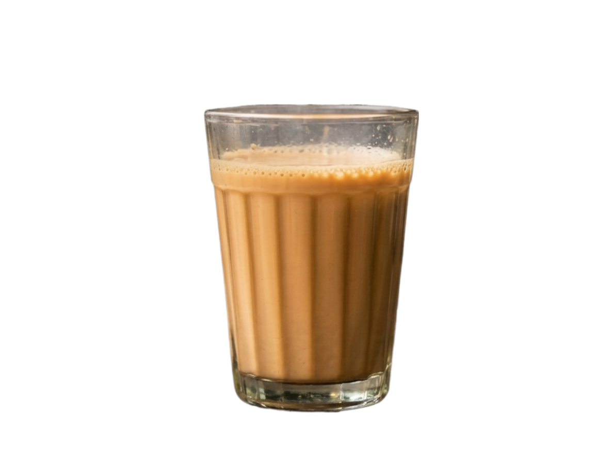

We craft authentic tapri-style cutting chai inside an ultra-premium experience. Infused with hand-crushed ginger, organic cardamom, and aged spices brewed meticulously all day long.

Escape your hectic workday routine. Drop in with friends, coworkers, or family to soak up a warm, ambient space built for dedicated chai lovers.